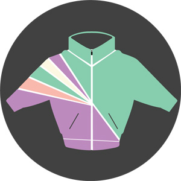

past performance | ||
|  |
Girl Walk // All Day Jacob Krupnick | |
|
Girl Walk // All Day, the debut feature film from Brooklyn-based director, Jacob Krupnick, is an exuberant 77-minute dance adventure shot entirely in the streets and public spaces of New York City. Dialogue free, the entire film is set to All Day, the most recent album by the mash-up DJ Girl Talk (aka Gregg Gillis), and follows three improvisational dancers – Anne Marsen (The Girl), Daisuke Omiya (The Gentleman) and John Doyle (The Creep) – as they embark on an urban adventure across NYC over the course of one long day. Girl Walk // All Day premiered in NYC in December 2011 -- a celebratory evening of film, the debut of Wings – a dance piece by Doyle, a dance party and a psychedelic light performance by Joshua Light Show. The film is currently on-tour around the world, creating large, immersive, interactive venue-specific viewing experiences that combine live music, dance parties and performance with screenings of the film. Girl Walk // All Day was funded through the support of 577 backers on Kickstarter, and is a production of the Brooklyn-based creative studio, Wild Combination. In addition to the venue-specific screenings, the film is also being distributed online, for free, in twelve chapters, from November 2011 - January 2012 by media partner, Gothamist.com. Girl Walk // All Day was named the “Most Innovative Music Video of 2011” by SPIN and is an official selection of the 2012 SXSW Film Festival. The film has received recent press from The New York Times, The New York Times Magazine, The SF Chronicle, CBS Morning Show, Pitchfork, Wired, Fast Company, The NY Daily News, The Huffington Post and more. Director – Screenwriter – Director of Photography – Editor: Jacob Krupnick | ||
upcoming performances |
|||
 |
|||
| EVQ Film Festival 2018 August 20-25 |
|||
performance archives |
|||
| 2018 | 2017 | 2016 | 2015 |
| 2014 | 2013 | 2012 | 2011 |
| 2010 | 2009 | 2008 | 2007 |